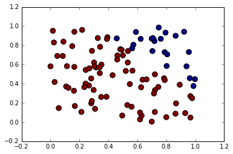

Introduction to Machine Learning and Data Mining
Neurocomputing
Kyle I S Harrington / kyle@eecs.tufts.edu
Some slides adapted from Geoffrey Hinton
Starting with Neuroscience
 Drawing of Purkinje cells (A) and granule cells (B) from pigeon cerebellum by Santiago Ramón y Cajal, 1899; Instituto Cajal, Madrid, Spain. Public domain.
Drawing of Purkinje cells (A) and granule cells (B) from pigeon cerebellum by Santiago Ramón y Cajal, 1899; Instituto Cajal, Madrid, Spain. Public domain.
From Neuron to Calculation
The nervous system is a net of neurons each having a soma and an axon
McCulloch, W.S. and Pitts, W., 1943. A logical calculus of the ideas immanent in nervous activity. The bulletin of mathematical biophysics, 5(4), pp.115-133.From Neuron to Calculation
Their adjunctions, or synapses, are always between the axon of one neuron and the soma of another
McCulloch, W.S. and Pitts, W., 1943. A logical calculus of the ideas immanent in nervous activity. The bulletin of mathematical biophysics, 5(4), pp.115-133.From Neuron to Calculation
At any instant a neuron has some threshold, which excitation must exceed to initiate an impulse
McCulloch, W.S. and Pitts, W., 1943. A logical calculus of the ideas immanent in nervous activity. The bulletin of mathematical biophysics, 5(4), pp.115-133.From Neuron to Calculation
$y_k = \phi ( \displaystyle \sum_{j=1}^m w_{kj} x_j + x_0)$
From Neuron to Computation
$x_1 \textbf{ AND } x_2$
From Neuron to Computation
$x_1 \textbf{ OR } x_2$
From Neuron to Computation
$\textbf{NOT } x_1$
From Neuron to Computation

From Neuron to Computation
$x_1 \textbf{ XOR } x_2$
From Growth to Learning
How do we set the weights?
From Growth to Learning
The assumption, in brief, is that a growth process accompanying synaptic activity makes the synapse more readily traversed.
Hebb, Donald Olding. The organization of behavior: A neuropsychological theory. Psychology Press, 1949.From Growth to Learning
When an axon in cell A is near enough to excite cell B and repeatedly and persistently takes part in firing it, some growth process or metabolic change takes place in one or both cells such that A’s efficiency in firing B is increased.
Hebb, Donald Olding. The organization of behavior: A neuropsychological theory. Psychology Press, 1949.From Growth to Learning
Hebb's learning rule: fire together, wire together
Hebbian Learning
$\Delta w_{kj} = \eta x_j y_k$
change weight $i$ proportinally to the product of the input and the output
Hebbian Learning
$\Delta w_{kj} = \eta x_j y_k$
Problems?
Supervised Method
How do we find weights that can produce a particular output?
Hinton's Fish and Chips
- Diet of multiple portions of fish, chips, and ketchup
- Cashier only gives total price of meal
Hinton's Fish and Chips
- Start with random guesses for the price of each portion
- After multiple days, should be able to know prices of individual portions
Delta-rule
$\Delta w_{kj} = \eta ( t_k - o_k ) i_k$
What Next?
More linear threshold units
And more learning methods